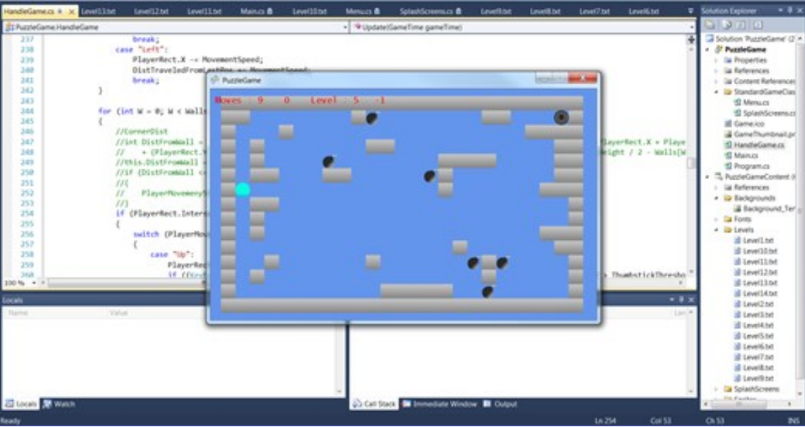
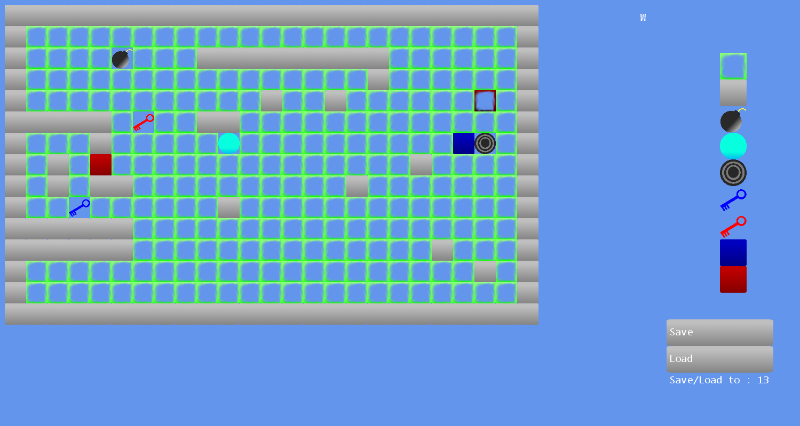
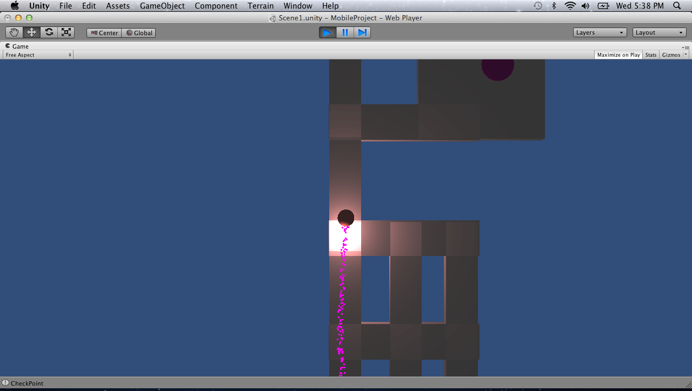
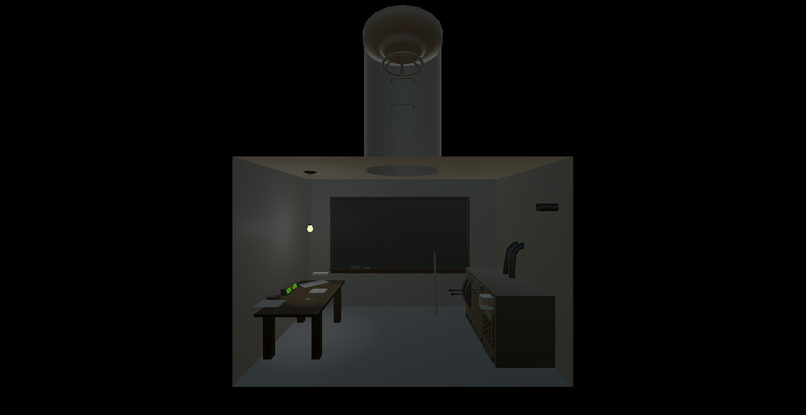
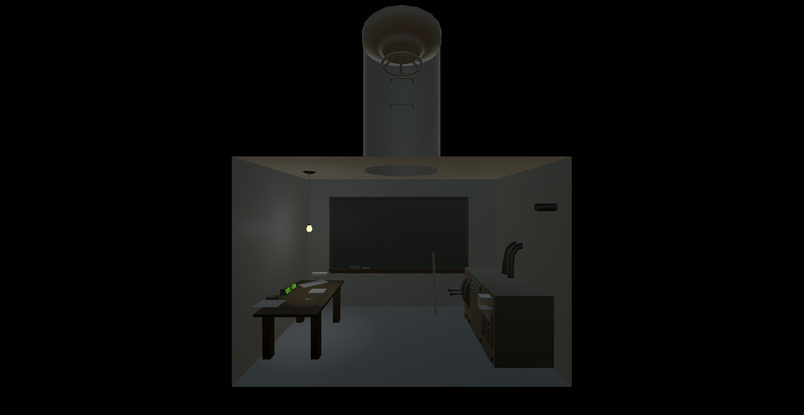
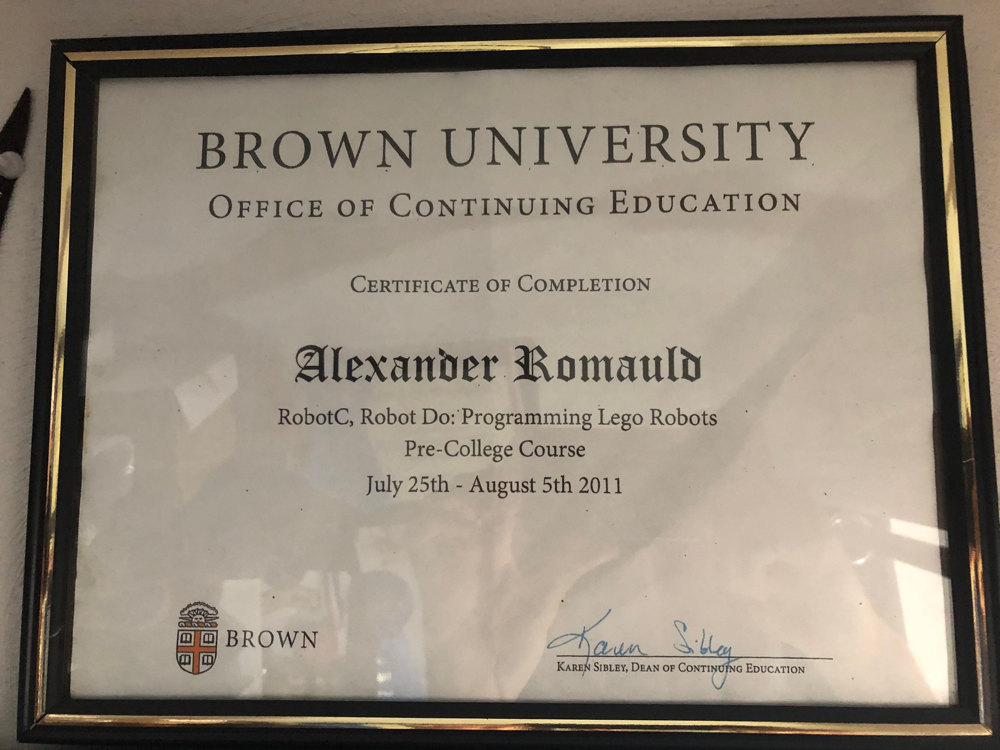
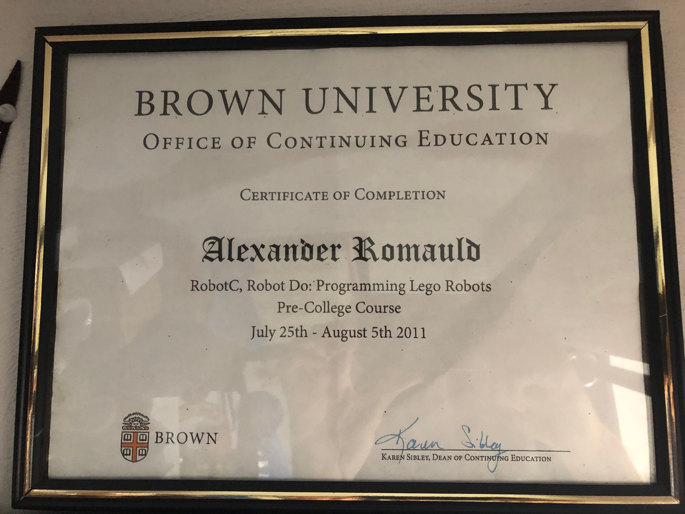

Misc Projects
Science/Engineering Fair Projects
Confuzzled is a puzzle game about navigating a ball to the exit. The ball can only move in cardinal directions, and can’t stop until it hits a wall.
 The process of making levels was very tedious. It Involved coloring cells in Microsoft Excel to visualize the level, then translating it into a text document for the game to read. Needless to say that this quickly became a bottle-neck, creating levels and testing ideas was far too time consuming, and iterating on feedback was slow. The time it took to build a simple level editor was dwarfed by the time it saved, and the quality of work I was able to achieve when not being bogged down by an inefficient pipeline. This was an early lesson that stressed the importance of having good tools.
Confuzzed was submitted in sophmore year, high school science fair, and ended up winning first at Rhode Island’s State Science Fair 2013.

In my freshman year of high school (2012) I had submitted to the science fair, a mobile game I built using the IPod's gyroscope.
Tilting the IPod, you would steer a rolling ball past obstacles, balance over narrow paths, and activate checkpoints.
The Bunker
Dead Lab
Hellbound
Baby Rush
 


 
